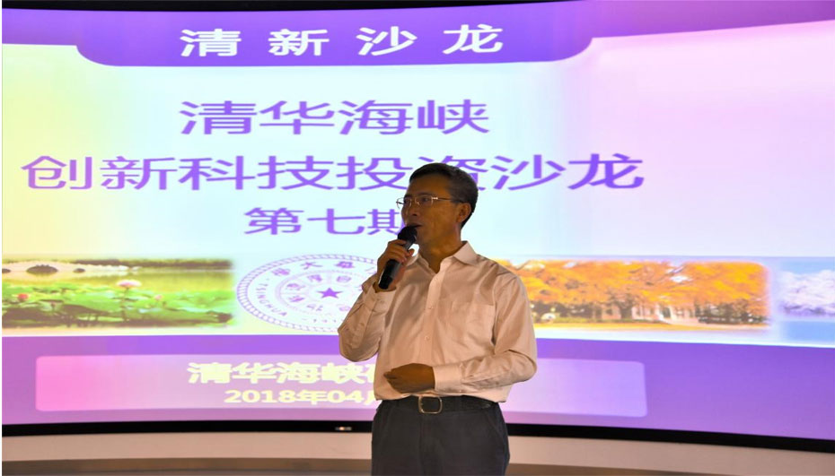
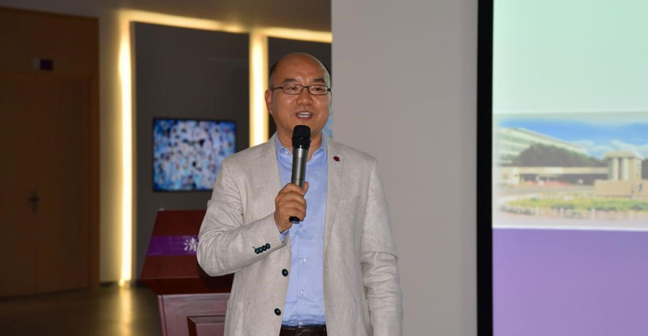

2018年4月20日下午，由清华海峡研究院（厦门）主办的清华海峡创新科技投资沙龙（简称“清新沙龙”）第七期活动在海峡院未来科技体验馆成功举行。
区块链这个词从201了年年中开始火到了现在，伴随着比特币的大涨，大众所理解的新技术推向了阶段性的热度顶峰。2018年4月20日下午，尤其在今年春节前后各大佬的火热讨论，将区块链这个不容易被（简称“清新沙龙”）第七期活动在海峡院未来科技体验馆成功举行。 经管TEE一EMBA2017级厦门移动课堂的一部分。 由清华海峡研究院（厦门）主办的清华海峡创新科技投资沙龙本次沙龙围绕区块链创新思维与投资展开讨论，同时也是清华

海峡院常务副院长郭棵博士介绍了海峡院的服务平台和园区使用规划。四大服务平台包括：资本服务平台，打造资本服务联盟；人才 服务平台，通过丁36计划为孵化的企业服务；公共实验平台，率先打造AI的超算平台；五大产业集聚平台。海峡院园区A楼将入驻两 岸三创基地孵化的企业；B楼将作为园区总部基地；C楼为海丝合作基地，主要面对东南亚产业；O楼为交流展示平台。园区A、B、C 、O四栋楼整体打造出海峡院创新创意创业平台。海峡院即将进驻新园区，也欢迎到场的EMBA同学关注海峡院，支持海峡院的发展

海峡院财务总监孙国富博士介绍了海峡院五大产业布局、四大服务平台以及“技术、基金、基地”3J的科技投资体系。他全面介绍了 海峡院已在大数据、半导体、大健康、新能源和大文化等五大投资领域进行的由院士领衔、校友协会人才系统支持、清华系上市公司 支撑的重要布局，将充分发挥海峡院平台拥有的六大投资优势，助力高科技项目的培育和发展壮大。海峡院欢迎及期待产业及资本界 就联合投资、共同成立基金、共同管理基金等几种基金合作模式一起交流和实践。